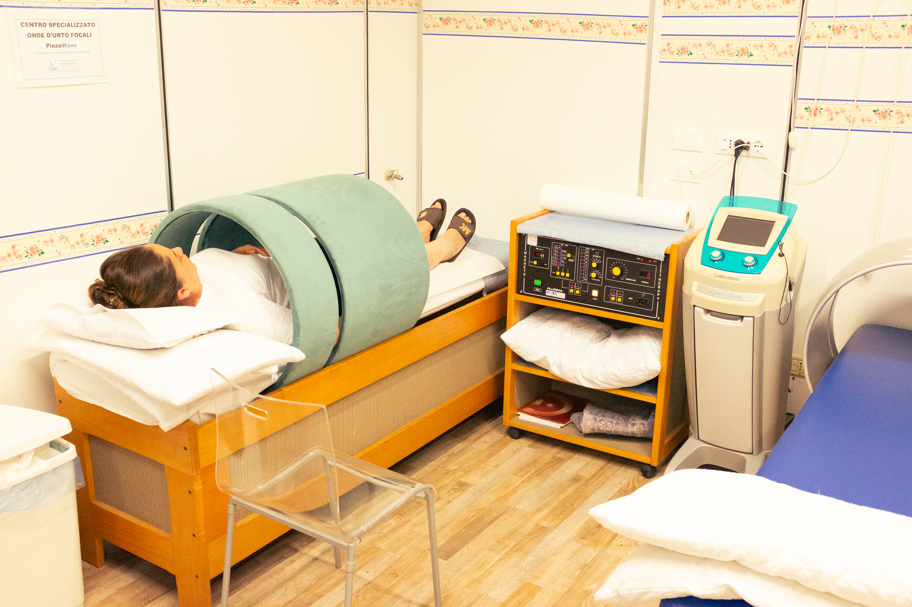
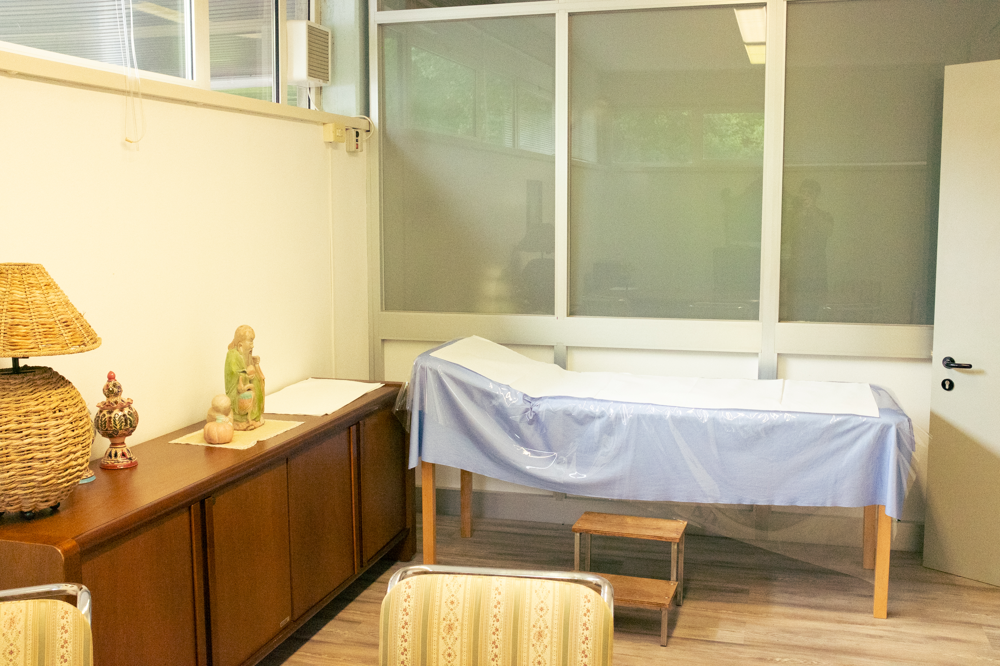
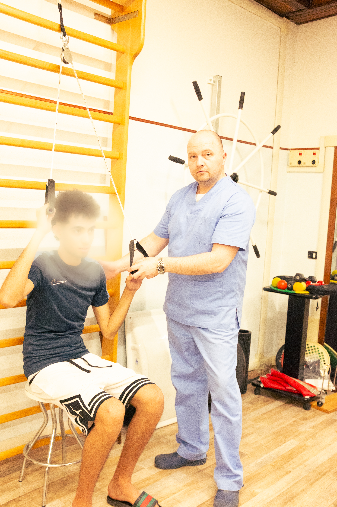
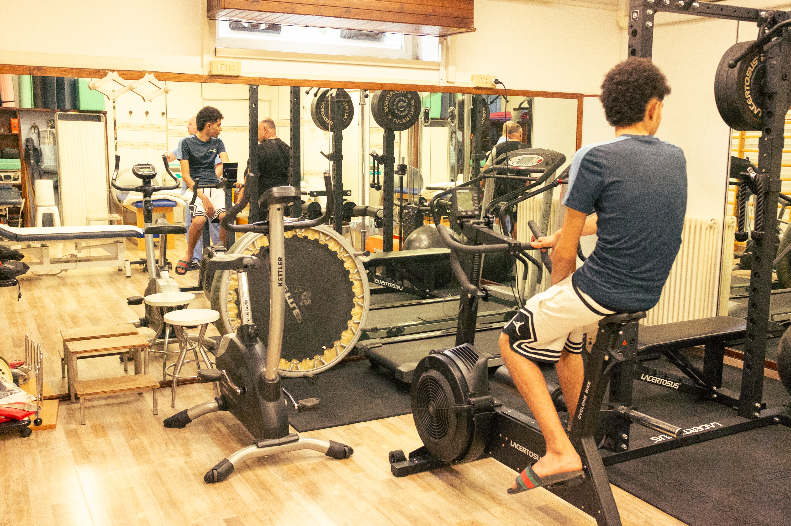

Il nostro Poliambulatorio Specialistico Privato e Centro Fisioterapico. Mettiamo al centro la tua salute fisica e riabilitativa con professionisti qualificati, terapie all'avanguardia e cure su misura.
Peculiarità del Poliambulatorio Specialistico Privato e del Centro Fisioterapico San Luca, è la trentennale collaborazione con lo "Studio Infortunistica Lamperini Tre" che a supporto di chi è rimasto vittima di incidenti di varia natura : stradale, sul lavoro, domestici, malasanità, responsabilità professionale, offre una consulenza non impegnativa e gratuita, ad opera di esperti in infortunistica con la disamina sia dell'evento traumatico e dell'iter che porterà alla formazione di un dossier ad uso medico legale; sono incluse nel servizio di infortunistica: Assistenza legale, Pe
Particolare cura viene posta ai trattamenti riabilitativi postraumatici, postoperatori, riabilitazione neurologica, riabilitazione in ambito sportivo, ginnastica posturale e dolce, linfodrenaggio manuale, trattamenti di massoterapia, all'utilizzo di apparecchiature elettromedicali all'avanguardia completando il servizio anche con trattamenti a domicilio o trasporto del paziente dal domicilio alla Struttura e viceversa.



